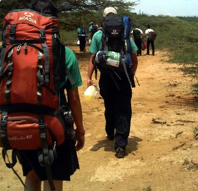

Volver
Lista de sitios donde hacer Vida al Aire Libre
Recomendados por los grupos scouts, equipos distritales y Equipo Regional

El Tinglado
(Zona Centronorte de Falcón)
Los Mangos
(Zona Centronorte de Falcón)
Rancho Los Vikingos
(Costa Oriental de Paraguaná)